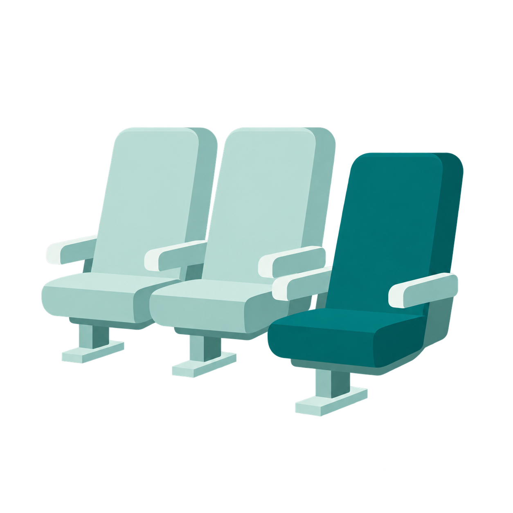
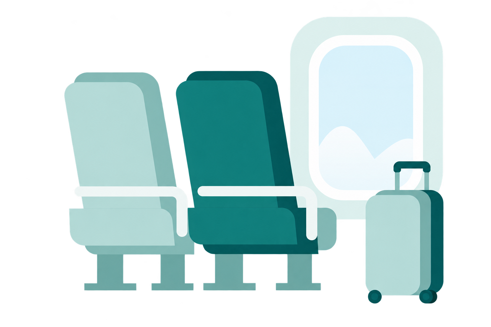
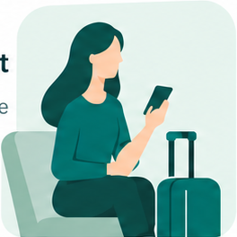
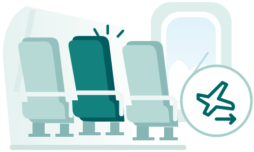
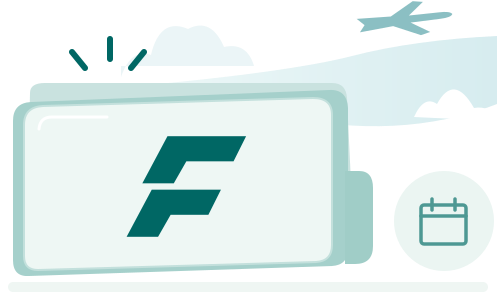
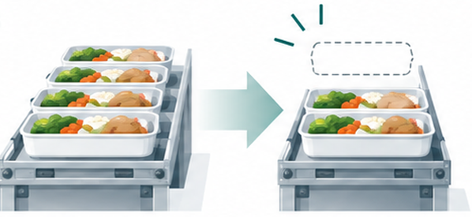
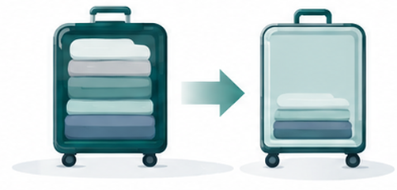
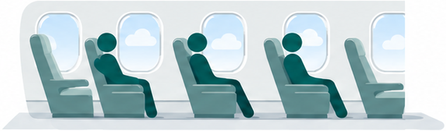

64%
would accept an equally good seat to help someone sit with companions
Among 1,000 US adults surveyed by YouGov.
YouGov, November 2022, question 6 ↗A marketplace for passenger flexibility
Cathay Flex connects passengers who need a travel change with people willing to make one. Those who help earn Flex Credits for benefits on this journey or the next.
Team Globe at Cathay Hackathon 2026
Seats, baggage and travel benefits


A passenger needs a changeEarned through flexibility. Available for future travel needs.
The opportunity
One traveller may need a particular seat or flight. Another may be happy with a different arrangement. Research shows that this flexibility exists.

Among 1,000 US adults surveyed by YouGov.
YouGov, November 2022, question 6 ↗Among customers contacted in two LATAM flight-change trials.
Reported by Caravelo, 2019, pages 6–9 ↗Cathay Flex makes that willingness useful by connecting it with other passengers’ requests and rewarding the people who help.
How it works
Flex connects travellers who need a change with those willing to help.
The passenger app
Eight travel resources
Accept a travel change or release a service you do not need, then use the credits for something that matters to you.
Value earned through one resource can be used for another, on this journey or a later one.
How Cathay Flex differs
Airline incentives, upgrade bids and loyalty redemption already serve specific needs. Flex brings passenger-led demand, coordinated exchanges and earned travel value together.
Travellers publish their own travel requests. Others can earn credits by making those changes possible, alongside Cathay’s incentives.
Flex connects different passengers’ requests, acceptable changes and available airline services to find exchanges that meet more travel needs together.
Passengers earn credits by helping other travellers or releasing eligible services. They can use those credits across travel resources and later journeys.
How Flex finds a match
Value for passengers and Cathay
Passengers gain travel choices that fit their needs. Cathay can fulfil more requests using its existing seats and services.
On the current journey

Compatible seat and flight changes fulfil needs that the original bookings could not meet. Automated matching and booking coordination reduce repeated staff follow-up.
At the next booking

Saved credits give passengers benefits to return for. Travel arrangements that fit their needs give them another reason to choose Cathay.
Less waste and lighter travel
Flex rewards actions that reduce unnecessary preparation, lower baggage weight and make better use of scheduled flights.

A meal declined before the catering deadline can be removed from production and loading, reducing food waste.
IATA and ASF, 2024 ↗
Passengers earn credits for released baggage allowance or verified lighter packing under Cathay’s rules. Lower carried weight can reduce fuel use and emissions.
JAL and Sumitomo, 2024 ↗
Voluntary flight changes can free seats where demand is higher. Filling those seats spreads a flight’s emissions across more passengers.
IATA CO₂ Connect methodology ↗